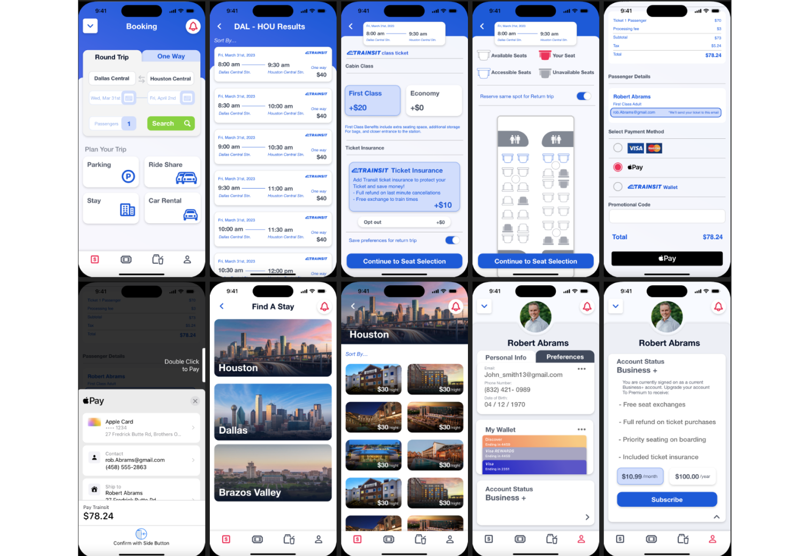

UI/UX Work
This spring semester, I worked with a partner on a semester long project to develop a brand from start to finish. We came up with a companion app for the upcoming Texas Central Bullet Train that would help you book a ticket, order in-train snacks, and offer educational information for Texans riding the train. We did everything from market at user research, to branding and final app design.
We Initiated our project with a lot of research and planning, looking into trends that were common in competitors apps like Omio and Amtrak. We took notes and referenced rising UI trends found in recent studies. We also launched a google forms to collect information from prime demographics that would use our app. Finally we brainstormed and worked together and finalized a logo for the brand as well as solidified a color scheme representing our values.
Below are some page designs created for the prototype website for Trainsit. Emphasis was put on educating customers on the benefits of the train as well as parking information and booking. I worked to create icons and organize information in different forms of relevance.
Below are some spreads from the final brand book we worked on, showing the main sections of the magazine, as well as some of the work shown earlier. I worked to apply color themes. I worked with the photographers and writers on the team to edit pictures on photoshop, edit articles to best fit a spread, and overall create a unifying element of unique storytelling and a diverse aesthetic for the magazine.
